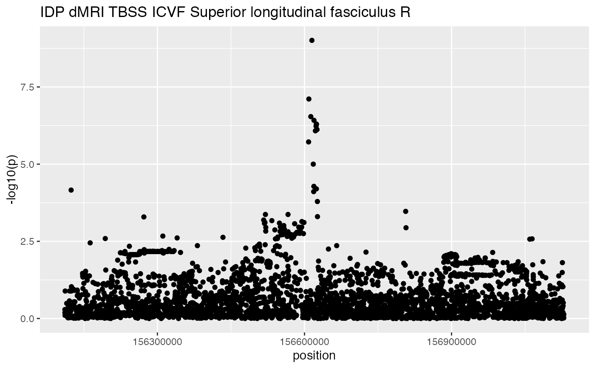

R/manh.R
manhattanPlot.Rdproduce a manhattan plot for a given study, based on specific coordinates or gene symbol with radius for flanking region
manhattanPlot(
studyID = "ubm-a-524",
symbol = "BCAN",
start = NULL,
stop = NULL,
chromosome = NULL,
radius = 0,
datasource = gwidf_2021_01_30
)character(1) id of study in ieugwasr::gwasinfo() catalog, defaults to "ubm-a-524", which is a study described in Elliott et al Nature October 2018
a gene symbol (to be used with genesym_to_string, implicitly); if absent, chromosome, start and end must be supplied, defaults to 'BCAN'
chromosomal address to start region (will have radius subtracted if supplied)
chromosomal address to end region (will have radius added if supplied)
name of chromosome in Ensembl nomenclature (e.g., 1, 2, ...)
numeric default to zero, specifies flanking region
data.frame that includes study identifier id and trait for labeling
Includes text component of aes() so that ggplotly can be used for hovering over SNP to reveal rsid.
# ubm-a-524 is a study of an image-derived phenotype in UK Biobank,
# specifically 'dMRI TBSS ICVF Superior longitudinal fasciculus'
# see https://dx.doi.org/10.1038%2Fs41586-018-0571-7
manhattanPlot(studyID = "ubm-a-524", symbol = "BCAN", radius=500000)
#> # A tibble: 6 × 12
#> chr p beta posit…¹ n se id rsid ea nea eaf trait
#> <chr> <dbl> <dbl> <int> <dbl> <dbl> <chr> <chr> <chr> <chr> <dbl> <chr>
#> 1 1 0.794 0.0041 1.56e8 7916 0.0165 ubm-… rs11… T G 0.654 IDP …
#> 2 1 0.692 0.0199 1.56e8 7916 0.0508 ubm-… rs12… A G 0.0244 IDP …
#> 3 1 0.692 0.0078 1.56e8 7916 0.0197 ubm-… rs72… T C 0.199 IDP …
#> 4 1 0.447 0.0125 1.56e8 7916 0.0163 ubm-… rs72… T G 0.350 IDP …
#> 5 1 0.501 -0.081 1.56e8 7916 0.120 ubm-… rs57… A G 0.00500 IDP …
#> 6 1 0.302 0.0167 1.56e8 7916 0.0161 ubm-… rs46… T C 0.362 IDP …
#> # … with abbreviated variable name ¹position
